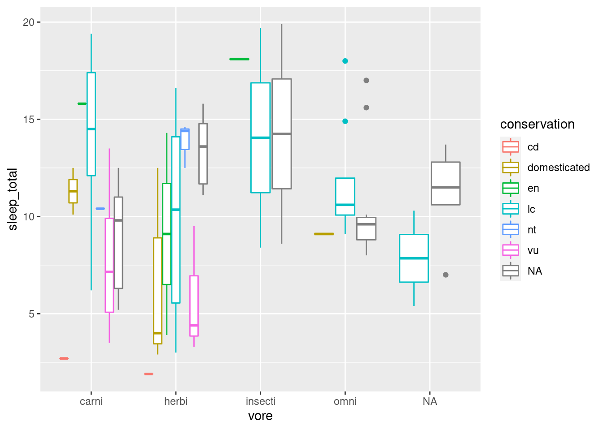
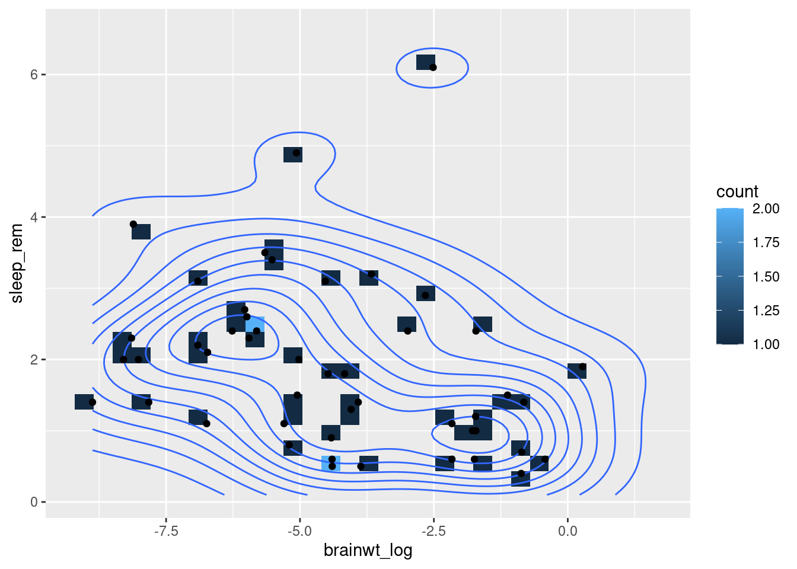
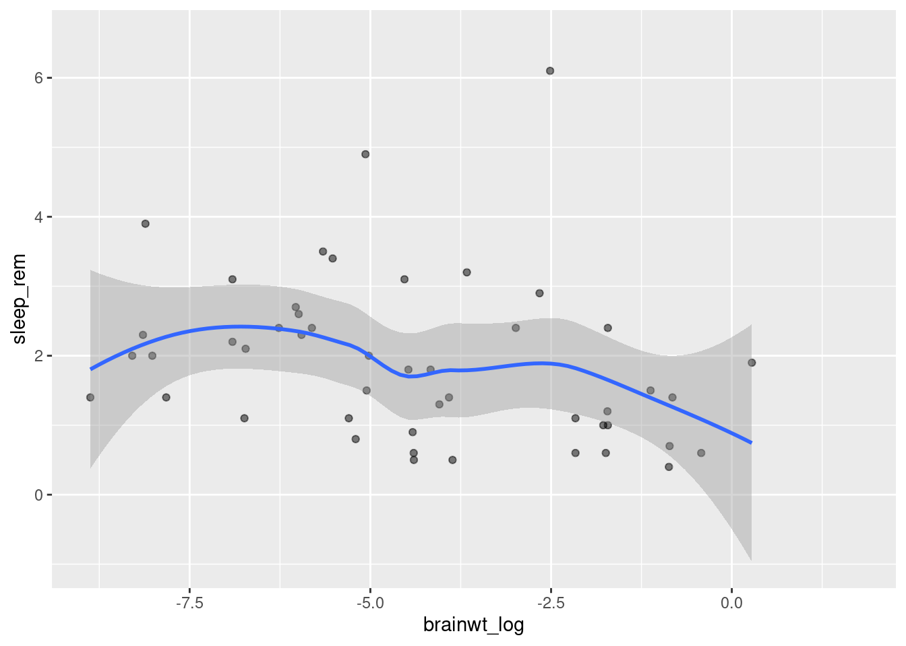
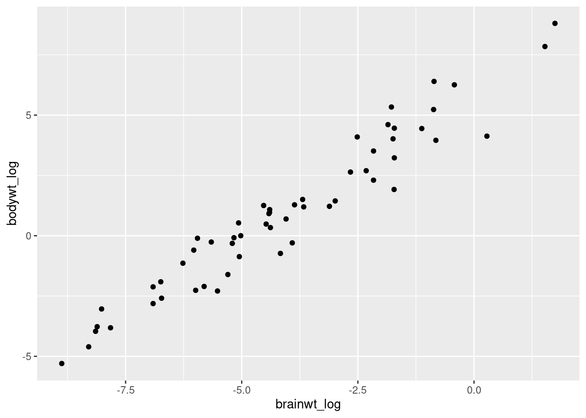

3 Day 4 - tidyverse and plots and such
Today we’re going ot look at tidyverse and reading files and plots and such
3.1 Reading files
## X Sepal.Length Sepal.Width Petal.Length Petal.Width Species
## 1 1 5.1 3.5 1.4 0.2 setosa
## 2 2 4.9 3.0 1.4 0.2 setosa
## 3 3 4.7 3.2 1.3 0.2 setosa
## 4 4 4.6 3.1 1.5 0.2 setosa
## 5 5 5.0 3.6 1.4 0.2 setosa
## 6 6 5.4 3.9 1.7 0.4 setosa3.2 Making plots with ggplot2
Learning Goals:
- List the roles of data, aesthetics, and geoms in ggplot functions.
- Choose the correct aesthetics and alter the geom parameters for a scatter plot, histogram, or box plot.
- Layer multiple geometries in a single plot.
- Customize plot scales, titles, subtitles, themes, fonts, layout, and orientation.
- Apply a facet to a plot.
- Save a ggplot to a file.
3.2.1 Getting started with a ggplot
We will primarily be working in ggplot2 as it has the greatest degree of customization for visualization and offers many additional features over the basic plotting in R.
Most ggplot calls to create a figure take the following form (you can read more using help(ggplot)):
ggplot(data = <DATA>, mapping = aes(<MAPPINGS>)) + <GEOM_FUNCTION>()
We will practice using our mammalian sleep dataset. You can look up more info about this dataset using the help function and the dataset name, msleep.
## # A tibble: 6 x 11
## name genus vore order conservation sleep_total sleep_rem sleep_cycle awake
## <chr> <chr> <chr> <chr> <chr> <dbl> <dbl> <dbl> <dbl>
## 1 Cheetah Acin… carni Carn… lc 12.1 NA NA 11.9
## 2 Owl mo… Aotus omni Prim… <NA> 17 1.8 NA 7
## 3 Mounta… Aplo… herbi Rode… nt 14.4 2.4 NA 9.6
## 4 Greate… Blar… omni Sori… lc 14.9 2.3 0.133 9.1
## 5 Cow Bos herbi Arti… domesticated 4 0.7 0.667 20
## 6 Three-… Brad… herbi Pilo… <NA> 14.4 2.2 0.767 9.6
## # … with 2 more variables: brainwt <dbl>, bodywt <dbl>You will first use the ggplot() function and bind the plot to a specific data frame using the data argument.
ggplot(data = msleep)
You will next need to define a mapping (using the aesthetic or aes function), by selecting the variables to be plotted and specifying how to present them in the graph, e.g. as x/y positions or characteristics such as size, shape, color, etc.
ggplot(data = msleep, aes(x = brainwt, y = sleep_rem))
You can then add ‘geoms’ – graphical representations of the data in the plot (points, lines, bars). ggplot2 offers many different geoms. We will use some common ones today including:
geom_point()for scatter plots, dot plots, etc.geom_boxplot()for, well, boxplots!geom_line()for trend lines, time series, etc.
To add a geom to the plot use the + operator. Because we have two continuous variables, let’s use geom_point() first:
ggplot(data = msleep, aes(x = brainwt, y = sleep_rem)) + geom_point()
To save your work-in-progress, you can assign the plot to a variable.
We can now draw the plot as a scatterplot with points to represent each state.
## Warning: Removed 35 rows containing missing values (geom_point).
???
msleep2 <- msleep %>% mutate(brainwt_log = log(brainwt))
ggplot(msleep2, aes(x = brainwt_log, y = sleep_rem)) + geom_point()## Warning: Removed 35 rows containing missing values (geom_point).
???
We can modify the appearance of the plot by changing aspects of the points we plot such as transparency (“alpha”) and color.
ggplot(data = msleep2, aes(x = brainwt_log, y = sleep_rem)) +
geom_point(alpha = 0.5, color = "blue")## Warning: Removed 35 rows containing missing values (geom_point).
It is also possible to scale the color of the points by some variable present in the data.
## Warning: Removed 35 rows containing missing values (geom_point).
When generating visualizations, it is important to annotate the figure with meaningful labels on the axes to make them accessible for the viewer.
ggplot(msleep2, aes(x = brainwt_log, y = sleep_rem, color = vore)) +
geom_point() +
labs(x = "Brain Weight (log)",
y = "Duration of REM Sleep")## Warning: Removed 35 rows containing missing values (geom_point).
3.2.2 Plotting Numerical vs. Categorical Data
We can create histograms in ggplot2 that are more aesthetically pleasing than the default hist function.

By adding a different parameter to fill in the aes we define throgh the ggplot function, we can separate out histograms according to different groupings such as here where we look at how total sleep distribution is distributed according to feeding behavior.

We can look at how many individuals in the dataset fall into each category, such as feeding behavior.

We can look at how many total sleep distribution is distributed within each category of feeding behavior using separate box plots.

We can even drill down further and separate out another category, so that we can look at each feeding behavior and each conservation status (e.g. how the total sleep duration of domesticated herbivores compares to least concern carnivores).

3.2.3 Plotting Error Bars
Discrete Variables ggplot(msleep2, aes(x = vore, y = awake)) + geom_bar(stat = “identity”)
ggplot(msleep2, aes(x = vore, y = awake)) + geom_bar(stat = “summary”, fun = “median”)
Error Bars ggplot(df, aes(x,y)) + geom_bar(blahblah) + geom_errorbar() you could do this, but then you need to have pre-calculated the mean value for each group and the SE in your data
feeding.data <- msleep2 %>% group_by(vore) %>% summarize(mean_se(awake)) feeding.data
What does mean_se do? ?mean_se y is the mean ymin is mean - one SE ymax is mean + one SE
ggplot(feeding.data, aes(x = vore, y = y)) + geom_bar(stat = “identity”)
ggplot(feeding.data, aes(x = vore, y = y)) + geom_bar(stat = “identity”) + geom_errorbar(aes(ymin = ymin, ymax = ymax), width = 0.2)
3.2.4 Plotting Trends in Big Data
Lots of these different figures summarize or aggregate the data. We may want to display the data with the individual points, but still show the overall trend across the data.
ggplot(data = msleep2, mapping = aes(x = brainwt_log, y = sleep_rem)) +
geom_bin2d() +
geom_density_2d() +
geom_point()
We can add a trendline with geom_smooth that you can check using help(geom_smooth).
ggplot(data = msleep2, mapping = aes(x = brainwt_log, y = sleep_rem)) +
geom_point(alpha = 0.5) +
geom_smooth()## `geom_smooth()` using method = 'loess' and formula 'y ~ x'
msleep3 <- msleep2 %>% mutate(bodywt_log = log(bodywt))
my.plot <- ggplot(msleep3, aes(x = brainwt_log, y = bodywt_log)) +
geom_point()
my.plot
We can also do this with trendlines that summarize only certain subsets of the data, such as ?
ggplot(data = msleep2, mapping = aes(x = brainwt_log, y = sleep_rem)) +
geom_smooth(aes(color = vore)) ## `geom_smooth()` using method = 'loess' and formula 'y ~ x'
The above plot reflects the trends, but makes it hard to see the data that is contributing to each trend line. These differences can be most easily seen using facet_wrap or facetting that splits the figure into separate panel where the data has been filtered by the category (i.e. ?).
ggplot(data = msleep2, mapping = aes(x = brainwt_log, y = sleep_rem)) +
geom_point() +
geom_smooth(aes(color = vore)) +
facet_wrap( ~ vore)## `geom_smooth()` using method = 'loess' and formula 'y ~ x'
3.2.5 Saving Your Figures
If you want to save your images as a local individual file on your computer, there are two easy ways to do that.
The first method uses ggsave to save the most recent ggplot figure you generated.
ggplot(msleep2, aes(x = brainwt_log, y = sleep_rem)) + geom_point() +
geom_smooth(method = "lm")
ggsave("plot.png", width = 5, height = 5)This function will save wherever your directory is currently. Check with getwd() and change with setwd(folder name). You can also provide a precise file path in the new file name.
Here is an alternative method for saving your figures:
pdf("plot.pdf") # creates the file
# png() also works if you want a different file format
ggplot(msleep2, aes(x = brainwt_log, y = sleep_rem)) + geom_point() +
geom_smooth(method = "lm")
dev.off() # finishes editing the fileAny changes to the figure that are contained between the initial creation of the figure (i.e. the pdf command) and the dev.off command will be included in the final saved image. However, the figure is being printed directly to the file it is writing and won’t appear elsewhere.
Licensed Creative Commons Attribution-NonCommercial-ShareAlike 4.0